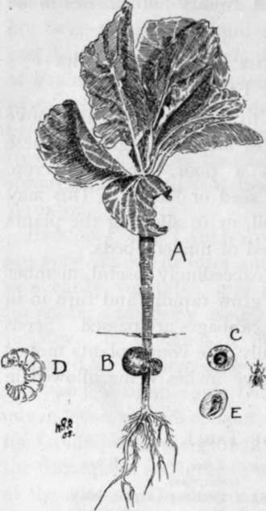
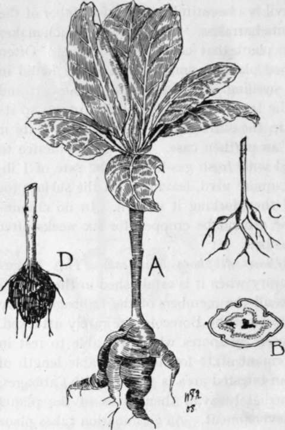
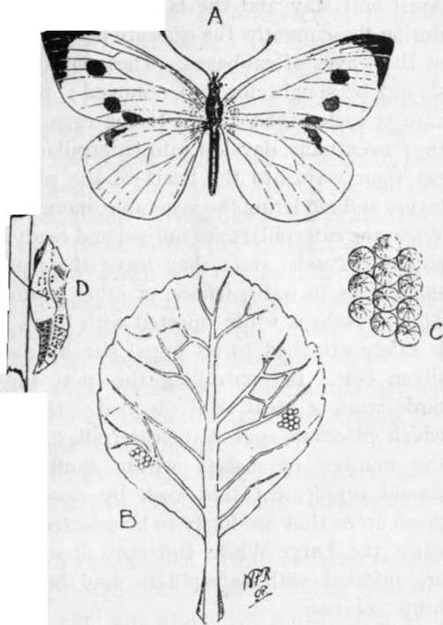

Pests Of The Cabbage Family And Their Treatment
Description
This section is from the book "School Gardening", by W. Francis Rankine. Also available from Amazon: School Gardening.
Pests Of The Cabbage Family And Their Treatment
Among the pests that attack the members of the Cabbage family the best known are the Gall Weevil, Club Root (Finger and Toe, Anbury), and the Large White Butterfly. The Weevil and Club Root attack the roots and stems of the plants, and the Large White Butterfly deposits its eggs on the leaves and from these emerge the caterpillars.
The Gall Weevil (Ceutorhynchus Sulcicollis)
This pest produces small swellings at the base of the stem and frequently these spherical growths may be found just below the surface of the soil. The trouble is brought about by a small weevil beetle which places its eggs in the tissue of the outer skin of the stem. This egg develops into a white grub which feeds on the plant tissue. In due course the grub passes into the pupal stage and eventually the perfect insect emerges to carry on its destructive work. The Cabbage is subject to this pest and little can be done to remedy the evil except lifting the plants when very young, cutting away the galls, and drawing the roots through a puddle of soot and clay. If the plants are again planted little harm follows the operation.
Fig. 19. gall weevil.
(Ceutorhytichus sulcicollis)
A.-A young Cabbage plant with galls shown on lower part of stem at B. C-Section of gall showing the grub of the weevil inside. D.- Enlarged drawing of the grub. E. -The pupal form. F.-the beetle.
The Gall Weevil is a beautifully marked member of the beetles ; it is quite harmless. It is the larva which makes its home in the plant that causes the mischief. Often in fully developed plants a small hole may be found in the side of the swelling. This aperture is the exit and indicates that the larva has left the plant to take up its pupal quarters in the surrounding soil. In this state it is protected by an earthen case. It is good practice to dress the ground with fresh gas-lime at the rate of 1 lb. or 1£ lb. to the square yard, leaving it on the surface for a fortnight and then forking it well in. In no circumstances must the ground be cropped for six weeks after such an application.
Club Root (Plasmodiophora Brassicae)
This fungus causes serious injury when it is established in the garden. It is common to all the members of the Cabbage family (including Turnips) yet the Borecoles are rarely attacked. This pest is caused by spores which are able to rest in the soil in a dormant state for a considerable length of time. If such an infested area is planted with Cabbages, the spores immediately avail themselves of the plants as a means of development. As germination takes place the roots of the plant attacked are contorted into large masses of slimy matter. The presence of this fungoid pest is indicated by the unhealthy appearance of the leaves which, on account of the interference of the spores on root action, are unable to develop. With care and prolonged exertion the pest may be exterminated. Every infested plant must be burned. If the plants are thrown on the soil to decay, the spores pass into the ground and develop when a congenial host plant is grown. When the plants are cleared the ground must be thoroughly dressed with freshly slaked lime, of which sufficient must be applied to cover the surface to a depth of half an inch ; it should be pointed in with a fork at the end of eight days. Gas - lime is also excellent and should be applied as advised under Gall Weevil.
FIG. 20. Club Root.
(Plasmodiophora brassicae)
A.-Young Cabbage plant in an early stage of the disease. B.-Section through root. C.-First phase of Club Root. D.-The last phase and complete rotting of roots.
It is, however, an extremely difficult matter to ensure the destruction of every spore by either of these methods, yet with persistent efforts the pest may be kept well within bounds. No member of the susceptible family must be grown on infested land for at least two seasons.
The Large White Butterfly (Pie-Ris Brassicae)
This well known insect is a less troubles o m e pest than the two foregoing sources of trouble. Its ravages are carried on above ground. The Large White is a widely distributed species of butterfly, and is familiar to every gardener. The female insect is larger than the male, and possesses more black markings than her mate. It is double brooded. The earlier butterflies appear in April and May and the later in July and August, and during these months the eggs are placed on the under side of the leaves of cabbages. These curiously shaped eggs should be sought for and removed ; prevention in this case is easier than cure. If the eggs are not removed they eventually develop into caterpillars, which steadily eat their way into the heart of the plant, riddling the leaves and rendering the vegetable, more or less, worthless. When the caterpillars are full-fed and ready for the change to the chrysalis state they leave the plant and betake themselves to walls, fences, or other protected positions. The chrysalis is white, spotted with black markings, and is safely attached to its pupal site by means of a thin silken belt. In controlling this pest the insect-eating birds work a great deal of good ; the ichneumon fly, which places its eggs in the caterpillar, also helps to keep the number of insects within limits. The gardener should supplement this work by closely inspecting his green crops that are likely to be selected by the butterfly, when the Large White Butterfly appears. Plants that are infested with caterpillars may be sprayed with a brine solution.
Fig. 21. cabbage white butterfly.
A.-Female. B.-Eggs deposited on a leaf. C.-Eggs magnified. D.-Chrysalis suspended by a silken band.
By permission of the " Agricultural Economist and Horticultural Review."
Continue to: